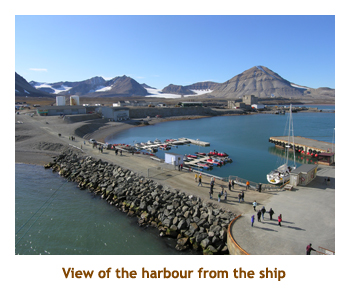
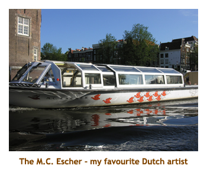

[ Home ] [ Travel ] [ Photography ] [ Pets ] [ Games] [ Rowing] [ Physics ]


Cruising on the Prinsendam
Travel
Cruises
Past Cruises (Diaries)
Future Cruises
Rogues Galleries
Land Trips
Diaries (Land Trips)
Hawai'i - Big Island - 04'01
Hawai'i - Maui - 05'02
Hawai'i - Big Island - 04'03
Hawai'i - Kaua'i - 09'04
Hawai'i - Big Island - 04'06
Hawai'i - Maui - 04'06
Mainland China - 05'07
Phoenix, Arizona - 12'07
Greek Isles - 05'08
Hawai'i - Kaua'i - 09'08
Hawai'i - Big Island - 09'09
Hawai'i - Maui - 05'12
Hawai'i - Big Island - 04'13
Ireland - 08'13
Mexico - Cancun 11'13
France/Belgium/Lux 07'15
Hawai'i - Big Island - 05'17
England / Wales - 06'17
Hawai'i - Big Island - 09'19
Photography
Cameras
Underwater
Pets
Tara
Blackie
Whitey
Muffy
Ollie
Rusty
Fluffy
Rufus&Dufus
Games
Rowing
Physics
Rating (out of 5): Ship  Food
Food  Service
Service  Itinerary
Itinerary
After traveling to Greenland and Iceland last year, we just had to complete the Atlantic arctic experience by visiting Spitsbergen and the Faroe Islands. The thought of visiting the most northerly town in the world (Longyearbyen) was exhilarating, knowing that further north there was nothing but snow and ice. The itinerary was excellent taking us to mostly new places. For example, we did 3 stops in Iceland last year, but this itinerary did two new stops. Likewise our two stops in Scotland were new too. And, of course, our stops in the Faroe Islands and Svalbard (Spitsbergen) were new to us.
This cruise was a milestone cruise in a number of ways. Firstly, it was our tenth anniversary of cruising, having started in August 2001 on an Alaskan cruise (Sea Princess). Secondly it was our 40th cruise since 2001 making this a "round number" cruise. Finally we would be celebrating our 37th anniversary of married life. Lots to celebrate! This was also our chance to finally check out the Prinsendam - Holland America's flagship of the fleet. Would it live up to the hype? I address our thoughts about the ship at the end of the diary.
Coincidence Alert: If you do not like coincidences, do not read this section. You know how when you learn a new word, or about a new place or whatever, and shortly afterwards the newly acquired word/place starts to pop up everywhere? This is one of those stories. Up until a couple of years ago I had never heard of Svalbard (the island archipelago containing the island of Spitsbergen and the town of Longyearbyen). I only discovered it when looking at some Arctic cruises, and I thought "I gotta go there!". While packing for this trip I threw in the the latest (July 2011) copies of National Geographic and Scientific American to read on the cruise. As we sailed towards Svalbard, I opened the NatGeo and there, on page 64, was an article on polar bears and some photos taken in Svalbard. Then on page 108, in a separate article on world food, there was a photo of the Svalbard Global Seed Bank! I tossed aside NatGeo knowing it to be possessed and opened instead my SciAm. There, on page 58, was an article on global warming and the author starts off talking about the polar bears in Svalbard. I didn't touch either magazine for the rest of the cruise. Then, when we got back home, there was a brochure from the University of Calgary about next year's travel study program. There, on page 16, was a description of a 3 week trip to Svalbard to look for polar bears. Aieeeeeee!
Day 1 (Jul 25) - Boarding in Tillbury
Chrissy and Matt picked us up at home around 4:00 PM. We were to the airport about 4:30. Checkin and security were relatively quick and we had an hour or so wait for our flight to Heathrow. The flight was ontime, lasting about 8 hours. We arrived at Heathrow about 10:30 AM the next day. It was cool and cloudy. We had a long wait inside the terminal for other passengers to arrive and finally boarded the transfer bus about noon. The bright side of our wait was meeting a wonderful couple, Bob and Dale, who we bumped into many times during the cruise. Then we spent another hour driving to different terminals to pick up more passengers. After we left the airport we got into thick traffic, mostly caused by an accident, and arrived in Tillbury about 3:00 PM. The driver knew Tillbury and was doing fine until told by head office to take another route (which didn't work) so we did a circle tour of Tillbury. It was a blue collar town, rough and dirty. Not a place I'd want to stay! Boarding was quick, we were in our room by 3:30, but 5 hours after landing in Heathrow. That was a long transfer!
We popped in to the buffet for a light snack and then returned to the room to unpack our
bags. There was a nice walk-in closet, but our suitcases would not fit under the bed so
we had to store them in the closet which made access really difficult. That's the first time
we haven't been able to store the bags under the bed. We looked for our CC group at 5:00,
but only found two people (Arno and Marcela).
We sailed at 5:30, a bit late due to loading provisions. For
dinner I had prime rib. We walked the ship for a bit watching us sail along the Thames
River towards the English Channel and then went to bed (after being up
for two days). We slept until 3:00 AM and then got up and walked the ship until 4:30. Met
a few others doing the same. Back to bed and we slept until 8:00 AM.
Days 2, 3 (Jul 26, 27) - A day at sea, then touring Scrabster
Day 2: We were up early for our first day at sea. It was cloudy and cool. We had
breakfast and then wandered the ship for a while. At 10:00, we attended a port overview and
excursion talk that gave a brief look at all of our upcoming ports. I was still tired from our time
change, so went back to the cabin for a quick nap. We had lunch and then played trivia at 1:30.
At 2:00 we went to a detailed port talk on our Scrabster stop. Then it was gym time, followed
by Corner gas, as Marjorie napped. There was a CC meeting at 4:00, but we forgot all
about it. It was dress-up night tonight. For dinner I had rack of lamb. We played "Name
That Tune" at 9:00 and did really well, just one point behind the winners. We woke up at 2:00
AM again and fell asleep at 4:30. Darn time changes!
Day 3: We slept in till 9:00 AM! We woke up to a beautiful sunny day. We popped
up to breakfast as the ship docked in Scrabster. Scrabster was just a dock and a few buildings
- not a town at all. About two miles away we could see the village of Thurso and there was a shuttle
bus to take passengers back and forth to Thurso. Our tour was at 11:45. By this time it
was shorts and t-shirts weather. We boarded the bus and
drove east along the coast. Scrabster is at the very top of mainland Scotland, so we were heading
to the north easterly point of land. We passed through Thurso where we noticed a Lidl and a Tesco
(for later consumption). Our first stop was at Dunnet Head, which is the most northerly point of land.
There wasn't much there other than a lighthouse, some seabirds and a gorgeous view. We saw
several lighthouses on our tour, and two of them (I forget which) were built by the father of
Robert Louis Stevenson. Then we drove further to the village of John O'Groats.
This was an interresting village with handicraft and souvenir shops, a colourful pub and
views of the Orkney Islands to the north. There was a ferry service that connected the Orkneys
to the mainland.
We wandered around the area for a while, enjoying the brilliant sunshine.
Awesome! Then it was back in the bus to retrace our path back to Scrabster. Along the way we
stopped at Canisby Church (near Castletown and Castle Mey - the favorite home of the Queen
Mother). It was a beautiful little church with an interesting graveyard. Inside the church we saw
the chairs where the Queen Mom and Prince Charles would sit. On the road again, we took the
option of being dropped off in Thurso for some shopping (at about 3:30). We hiked a few
blocks to Lidl and bought some Coke, peanuts, juices and a bottle of Hobgoblin beer to
see us through the cruise. We caught the shuttle at 4:00 back to the ship. We wandered the
dock area and got some nice shots of the ship in the sun. Back onboard at 5:00 we stood
on our balcony (facing the dock) and watched a pipeband and highland dancers entertain us
as we waited for our 6:00 PM departure. That was nice! It had been a wonderful day. For
dinner I had "crispy shrimp". The entertainment was a Buster Keaton like slapstick
comedian who was very good. You don't see acts like that very often anymore.
Day 4 (Jul 28) - Viewing the birds in Lerwick
We had a good sleep and got up at 7:00. Marjorie did a laundry. It was a cool, cloudy and
rainy day. We had breakfast as we anchored in Lerwick - the main city of the Shetland
Islands. This was our second time here, visiting the previous year on our Fire & Ice cruise.
We were into the tender by 9:30 and hit the tender slip at about
9:45 which was close to the town center. Our 10:00 tour was a private one with a small
boat (the m.v. Dunter III with12 passengers)
that circled Noss Island with millions of sea birds. The owner was a very knowledgeable
guy who was very excited about the birds and sea life. On the way to the island we
stoped at a dark cave (The Orkneyman's Cave on Bressay Island) where the captain
placed a submersible camera and lights into the dark water and we watched the
underwater scenery on large screen monitors. It was amazing - seaweed, coral,
crabs, shrimp, starfish, and even a passing seal.
Then we sailed around Noss Island. We saw thousands of Gannets nesting in the cliffs,
loads of Puffins flying above us, and some Great Skuas following the boat. I'm sure that
among the clouds of birds there were shags and cormorants, etc. Despite the rain it was
a wonderful tour. We were back to the ship by 2:00 for a quick lunch. Marjorie tendered back into
town to use the internet (free wi-fi) while I went to the gym. 4:00 was trivia time. At dinner it was
German night, so I had the sauerbraten. It was really good. The entertainment was a lady
singer who was quite good. Our room was immediately above the show stage so we
usually went to the early show and then heard the show repeated (at the later
show) from our cabin. That night it was really rocky and rolly on the ocean. As it
turned out is was the only rocky night we would have for the whole 21 day voyage.
Day 5 (Jul 29) - Traces of Vikings in Torshavn
Today was another cool and cloudy day. We were up at 7:00, had breakfast and then
met on the dock for our 9:00 bus tour. We were in Torshavn in the Faroe islands - a country
we had never been to before. Torshavn is the capital of the islands. It was originally settled
c. 850 AD by Norsemen (vikings). Our tour took us up
the island of Streymoy to a bridge crossing to the island of Eysturoy. From there we headed
south to the neighbouring villages of Toftir and Nes. Stopping for a while we visited a
woollen goods factory / store (Navia) and then walked around the village. Back on
the bus we retraced to the north stopping at Nordagota and visiting an open air museum.
The museum buildings were circa 1830 with sod roofs. It was very interesting. We had an hour
to roam the area and then drove back toward Torshavn. We stopped at an overlook where we
got a great view of the city. We were back onboard at 2:00 for lunch. Then I went to the gym
while Marj went to the internet room. I hustled to get to 4:00 trivia only to find that today it was
at 3:30! Oh no. Marj had shown up on time though so all was not lost. We wandered the ship
for a while and then went to dinner. I had lamb souvlaki. The entertainment was a classical
guitarist and he was excellent. We had to
turn our clocks back one hour.
Day 6 (Jul 30) - The little village of Djupivogur, Icland
Today we were anchoring in the Icelandic village of Djupivogur.
This was a small village of about 400 people. The ship's excursions all involved travelling far
from the village and were very expensive so we had decided to just spend our time walking
around the village. We woke up at 7:00 AM to heavy fog. Marj headed off to do laundry and I
uploaded our photos to my laptop for safe keeping. We had a late breakfast and tendered
off the ship about 10:30. The fog had cleared and it was just overcast with a bit of rain. We
climbed a small hill for an overlook of the village and then walked to the hotel so that Marjorie
could use the free wi-fi. We had done the whole town by 12:30, so returned to the ship for lunch.
After lunch Marjorie headed to a foodie show while I went to the library. Then off to the
gym at 3:00 and trivia at 4:00. By this time we were completely fogged in again and couldn't
see anything at sail away. For dinner I had beef Wellington. There was nothing
interesting for entertainment so we played Skip-Bo until almost 10:00.
Days 7 - 9 (Jul 31 - Aug 2) - Three days in Reykjavik
Day 7: Three days in Reykjavik? Actually it was an evening, a full day and then a morning, so it was like having 2 days in total. The first day, our original itinerary had us in Heimaey, a tiny village on a tiny island near Reykjavik. However, because this was a Sunday and everything would be closed in Heimaey, the itinerary was changed to give us an extra evening in Reykjavik.
We slept in till 8:00 today. It was cool and raining. We wouldn't be in to Reykjavik
until 5:00 PM, so it was like a day at sea. We had breakfast and then went to the
Future Cruises lecture at 10:00. They were drawing for door prizes at the lecture and
I won a 100 minute internet package. That was great as the internet is always so
expensive on the ships. One lady won a bottle of champagne and wanted to trade
with me, but NO WAY!! I went to the gym at 11:00 and Marjorie went to a cooking demo.
Lunch was a 12:00 followed by a lecture on Vikings at 1:00. At 2:00 we went to
an "Andrew Lloyd Webber" concert by the lady singer we had seen a couple of
evenings ago. She talked a lot about ALW and sang many of his songs. It was
excellent.
We read until 5:00 and then watched us dock. We had an early dinner at
5:15 as our "Blue Lagoon" tour was at 6:30. We boarded the bus on schedule
and did a 45 minute drive through some barren lava flows to the site of the
Blue Lagoon. This is a famous "hot springs" pool with hot bluish mineral water.
A substantial building contained the changing
rooms plus a restaurant and a souvenir shop. Each person is given an electronic
wrist band that controls a sizeable locker for clothes storage. High tech!
The parking lot was full of cars and buses so we thought the pool would be crowded,
but when we got to the pool it was HUGE!
The pool sits in a depression in the
black lava rocks and the bottom has been filled with sand to make a very
comfortable but natural pool. The temperature was ideal as you could wander
close to the inlet pipes (hot) or away from the pipes (cooler) and find the
perfect spot. We spent 1.5 hours in the pool and wandering
about the site. It was
wonderful. Then it was back to the ship by 10:00 PM.
Day 8: The next day we were up by 6:00 to another cool and rainy day. We had
breakfast and then headed off to our private 8:00 AM tour with Gray Line tours. This was
a full day adventure in the outskirts of Reykjavic. We drove through the town and then out
into the countryside. Our first stop was at an overlook of a valley with geothermal
power plants. Hot water pipes ran through the valley and power plants spewed steam.
Then we travelled on to Thingvallavatn (Thingvalla Lake). We did a bit of a walk there and then
drove to Gullfoss (Golden Falls). We had lunch at a restaurant and then hiked down to the falls.
Then we continued on to Geysir to see a spouting geyser and some bubbling pots. Our
final three stops were at an old church (in Skalholt),
then another set of falls with a salmon ladder
(Faxi falls) and finally a small volcanic crater (Kerid ) with a lake inside.
We were back to the ship by 5:00 PM. It had been a wonderful tour. For dinner I had
shrimp and scallop linguini. The entertainment was an Icelandic "pop" group who
did a medly of songs from the 1950's through ABBA. They even threw in a couple of
traditional Icelandic songs.
 |
|||
Day 9: Once again we woke up to cloudy skies. We would not be leaving until noon.
We didn't want to shuttle into the city, so we had breakfast and then just wandered around the
dock area. There was a fishing net factory right on the dock so we peeped in to see what was
going on. A number of employees were stringing together a net. We walked along a jetty to
a bright yellow lighthouse. After seeing all there was to see, we headed back aboard. I went to
the gym. We did lunch at noon, just as the ship was setting sail for Spitsbergen. Trivia was
at 1:30 followed by a 2:00 PM lecture on Spitsbergen by one of the ship's officers. At 3:00 there
was a port talk on the highlights of Spitsbergen. For dinner I had salmon which was very good.
By this time we were part way up the western side of Iceland, when the captain announced that
we would be making an emergency stop in Isafjordur (we were there last year) to do a
medical evacuation. The entertainment was a lady from Uruguay who played an electric
harp. She was really amazing. We set our clocks ahead one hour tonight.
Days 10, 11 (Aug 3, 4) - Two days at sea
Day 10: Heading north we had two typical days at sea. The seas were very calm. Today we had trivia (twice), another lecture on Vikings and food. It was formal night but we decided to eat in the lido rather than dress up. We met Jeff and Susan (from Coquitlam) there so joined them for dinner. I had beef tornadoes which were excellent. We skipped the entertainment. We passed Jan Mayen Island between 10:30 and 11:30 and it was light enough to take pictures.
Day 11: Our second day at sea began cloudy, but by noon there was SUNSHINE!
It was very cool though, the high being 4 degrees. The captain hosted a Q&A session at
10:00 and there was a special Mariner's Club lunch at 11:30. Travel trivia was at 1:00 followed
by a visit to the gym. I finally drank my Hobgoblin beer from Thurso. Another trivia session was at
3:00. I read a bit then it was time for dinner. I had lamb osso buco. We skipped the entertainment
(crooner). We put our clocks an hour ahead tonight. Due to our northerly latitude, our next
sunset was to be August 9! Tonight we would cross the Arctic Circle.
Day 12 (Aug 5) - Crossing the Arctic Circle; looking for polar bears in Ny Alesund
We woke up to a beautiful sunny day, but only 2 degrees. We were still at sea as we would
arrive at Ny Alesund around noon. We slept in until 9:00 then got up and did breakfast. Although
we had crossed the Arctic Circle sometime in the night, there was a crossing ceremony on
the top deck at 10:00. This involved speaches and actions by staff and passengers dressed
up like Greek gods and personages followed by a "polar bear" dip in the pool by a hearty
group of "blue nosers" (36 of them!). It was much like the Equator parties we had had on previous
cruises. Afterwards, Marjorie headed off to do laundry and a cooking class while I headed to the
gym followed by corner gas. We did lunch in the formal dining room as the buffet area was
always so crowded.

At noon we docked at Ny Alesund. We were scheduled to anchor and tender, but somehow
the captain made fast at the tiny dock which was great. Ny Alesund is very small - about 30
scientists live there year round, with the population swelling to an immense 150 in the summer.
There was once a coal mine here that supported a village of several hundred people, but
that has been long closed (1920's). Now it's just scientists studying the weather, or the
geology, or the flora and fauna. After donning our gloves and toques
we walked ashore and soon traversed the entirety of the town. There were no
excursions offered here, so all of the passengers just walked around in the sunshine.
We found several national buildings (Chinese, Korean, Norwegian, etc) as well as a very
informative museum. On the two or three gravel roads leading out of the town were polar
bear warning signs - don't proceed without a rifle. They are serious about this and just
the week before, a group of campers were attacked and one boy was killed.
We were back onboard by 4:00 for trivia.
Sail away was at 5:30. For dinner I had a veal chop. The entertainment was a classical
pianist (did pop too) who was excellent.
Day 13 (Aug 6) - Magadalena Fjord and the Polar Icecap
Another gorgeous sunny day, but only 1 degree. Today was a "cruising" day. We had breakfast and then watched our arrival at Magadalena Fjord at 7:30 AM. It was a very small fjord compared to the fjords of Norway, but very interesting just the same. There were lots of glaciers running between the mountains to the ocean. By 9:30 we had done the fjord and we headed north to find the polar ice cap. Marj headed off to read and I did the gym. Trivia was at 11:30. We had lunch and then hustled to a second trivia session at 1:30. We hit the ice cap (figuratively speaking) during trivia. We went up to the top deck to see the hundreds of icebergs and, in the distance, the solid white of the ice cap. This was the furthest north we could sail - about 82 degrees latitude (500 miles from the north pole). It was getting cloudy now and very cold and windy. Today Marj and I won the daily library trivia. Another mug! For dinner I had prime rib. The entertainment was a magician / comedian and he was just excellent.
We went to bed just after 10:00. Soon after, the air conditioning stopped and the ship
went deathly silent. The captain came on the PA and announced that the ship had lost
power. It was eventually discovered that some safety sensor had malfuntioned and shut
off the engines. It took about an hour, but we were once again powered up and underway.
It was a bit scary knowing that we were thousands of miles from anywhere and all alone
on the ocean. Off to Longyearbyen!
Day 14 (Aug 7) - A day in Longyearbyen
After three days of sunshine, we were back to cloud again.
This morning we entered a small fjord
passing the village of Barentsburg. We arrived in Longyearbyen
at 8:00 as we were eating breakfast. We had booked a bus excursion for 8:30. We hopped on
the bus and did a tour through the village. Our tour guide was a Saami lady from the Lapland
area of Finland. Longyearbyen is the largest town on the islands
with a population of about 2,000 people, and is the world's most northerly town. (Ny Alesund
is further north, but doesn't qualify as a town). Our first stop was at the local museum. It was
very well done with wonderful exhibits of life in the area. There were stuffed polar bears,
caribou, seals and water birds to give an idea of the wildlife in the area. Continuing
our trip around the town we saw the abandoned coal mines in the surrounding hills. Only
one mine is still in operation. Once again we noticed polar bear warning signs.
Then we headed
out of town, past a large lake,
to a "wilderness center". There were some buildings that were replicas of early
houses and lodges, but the main attraction was some sled dogs. Dog sledding is a big
tourist attraction here. We were served hot pancake roll-ups (with sugar and cinamin)
that were cooked in one of the lodges. Then it was back through town to the dock.
We were back aboard by 11:30. We had lunch and then headed to 2:00 trivia. The ship
set sail at the same time, destined for Norway. From the trivia lounge we could
see the fjord and Barentsburg. At 3:00 there was a piano recital by the
pianist we had enjoyed a couple of nights earlier. Once again he was excellent.
Afterwards Marjorie did some reading while I went to the gym. Marjorie won at
library trivia - another mug. For dinner I had the London broil with a yorkshire pudding.
The entertainment was a lady singer so we skipped it. Marjorie did a laundry
instead.
Days 15, 16 (Aug 8, 9) - Crossing the Arctic Circle again
Day 15: We were still having unbelievably smooth sailing. Today was cool and cloudy.
We were up at 8:00. Marj finished the previous night's laundry in the dryer. Then it was breakfast.
Today was a day at sea. We completed library trivia then Marj wandered off and I went to the gym.
The internet was finally back again after 5 days, but very slow. We did trivia at 11:30 - won HAL
thingies. Then we did the dining room lunch. In the afternoon the sun came and went. Somewhere
along the way we crossed the Arctic Circle, but there was no celebration this time - only
once per cruise! We read
for a while then went to travel trivia at 3:00. We won HAL mugs. Later we won library trivia.
Triple Crown! Hat Trick! It was formal night tonight. I had beef tenderloin. We
skipped the entertainment.
Day 16: Our second day at sea was a bit warmer (11 degrees) as we headed
south. The sun came in and out of the clouds. We were up at 8:00. We had breakfast and then
attended a lecture on Edinburgh at 10:00. Then Marj wandered and read, while I went to
the gym. Afterwards it was Corner Gas. There was a special international buffet for lunch.
I had Chinese food and sushi. Trivia was at 1:30. We won at library trivia again - we must have
been the only ones doing the daily quiz. At 2:30 there was a show by the comedian magician.
He was excellent once again. The ship announced a passenger photo contest
so I entered 3 photos that we had taken on the trip (into 3 of 4 different
categories). Voting would take place over the next few days.
Then we read and wandered the ship. I had leg of lamb for
dinner. We sat with our Coquitlam friends (Jeff, Susan, Vic and Brenda). Afterwards there
was a variety show for the evening entertainment featuring soloists from previous nights.
We stayed for harpist (excellent), but left for the singers. Tonight was the first night in several
days that would come complete with a sunset.
Day 17 (Aug 10) - A day in Alesund, Norway
We arrived in Alesund at 7:00 AM after 2 full days at sea. It was coolish,
cloudy and a bit rainy. The Ryndam was in port with us. We had breakfast
and then walked around the city for the morning. Marjorie found a hotel
with free wi-fi, so I wandered the streets. The buildings were those typical
Norwegian wooden structures with various colours of paint. I love it!
When I returned to the hotel it rained hard for a while. When Marj was
done we went across the street to the Kiwi store for Coke and animal crackers.
We were back on the ship by 11:30. We had a quick lunch and then joined
our excursion at 12:30. Now the rain was gone and there were high cloud
with spurts of sunshine. Much nicer. We drove through city with the guide
pointing out the important buildings.
Our first stop was at the aquarium for about 1 hour. It was very interesting with excellent
displays of local sealife. Outside there was an excellent penguin display area - obviously not
local sea life! Then we drove to an outloook on a hill near the town. What a great view of the whole
city from there. There were lots of people hiking up to the lookout (we drove) including one
lady that had a parrot cage on her back. We drove back through city to the ship, arriving
at 3:30. We rushed to 4:00 PM trivia. Because we were still in port, many of the trivia players
were still ashore, so six of us from various teams made up a new team of lost souls. We won!
The prizes were really nice this time and I got a HAL tie. For dinner I had sirloin tip. Great!
The entertainment was a flutist from Edmonton. She was very good. We skipped the
11:00 PM chocolate buffet.
Day 18 (Aug 11) - Third time in Bergen, Norway

We were up at 7:00 AM as we entered the harbour of Bergen. It was a gorgeous
sunny day with a predicted high of 21. We had breakfast and then headed out for a
walk in the town. From the ship, we walked through the Bergenhus castle area to the
Bryggen area. We had been through the "old town" twice before, so we walked along
the canal to the fish market. After browsing the handicrafts and seafood delights, we
crossed the street to the tourist info place so that Marj could use the internet.
Interneting accomplished, we continued on our walk. We decided to walk up the
hillside (past the funicular station) to the streets above. The climb included
staircases and switchback roads. Not climbing quite as
high as Mount Floyen, we still had marvelous views of the city. We took a different
route back down in a "straight" direction that brought us out to the Bergenhus site.
We arrived back to the ship at noon. We had a quick lunch and then assembled for
our 1:00 PM tour.
The weather was sunny and warm, so we dressed in shorts and t-shirts. Our tour started with a drive around Bergen, which was wonderful in the sunshine. Then we headed out into the country to Troldhaugen, specifically to Edvard Grieg's house. On our first trip to Bergen (2009) we did Ole Bull's house. The second time in Bergen (2010) we had signed up for the Grieg Tour but it was canceled due to lack of interest. So it was third time lucky! We were taken through the house and then treated to a piano recital in the nearby concert hall. It was wonderful. We then drove to the Fantoft Stave Church (a reconstruction of a wooden church). We toured inside the church and got some photos from the outside.Then it was time to drive back towards the ship (4:00 PM). We decided to get off in town and walk back to the ship. We bought some t-shirts for the kids and then wandered back to the ship enjoying the late afternoon sunshine. For dinner I had pork ribs. Very good. During dinner some Norwegian customs officials came on board to process VAT refunds. We had bought t-shirts so took in our receipt and received "enough for a cup of coffee"! We skipped the entertainment. Instead we walked around the promenade in the sunshine. The ship sailed at 10:30 PM.
Days 19, 20 (Aug 12, 13) - A day at sea, then we visit Rosyth (Edinburgh)
Day 19: Today was another day at sea, crossing the Norwegian Sea.
It was warm and sunny and the seas were calm. We were up at 7:00 to have
breakfast. We read for a while then Marj went to a lecture and I to the
gym. Gym Note: I should mention that this is the first cruise
where I never had to wait for a bike or erg, and those on the equipment
were really using it. So often on other cruises the equipment was being
"hogged" by people doing their crossword puzzles or watching the TV. Very
annoying. Then it was lunch time. We played travel trivia at 1:30
- won! Read some more then trivia at 3:00. Afterwards Marj and I played
Skip-Bo in the library. We won library trivia again - our final mug. It
was formal night tonight. Our trivia buddies Jeff and Nanette invited
our team to their cabin for cocktails at 6:00. Very thoughtful! For dinner
I had surf (lobster) and turf (fillet). It was excellent. We skipped the
entertainment. The clocks were set back 1 hour tonight.

Day 20: We woke up this morning to cool and rainy weather. The ship
pulled into the Firth at about 7:00. We were under the famous Forth bridge at 8:30
and docked at Rosyth at 9:00. We had breakfast at 8:00 and then headed off
on our own for the morning. From the dock area, we took the free shuttle bus from
the ship to the train station in nearby Inverkeithing. We bought tickets for the 10:30
train to Dunfermline. The train ride was about 1/2 hour. We spent the morning wandering
around the town. Dunfermline is an old town and was the capital of Scotland prior to
Edinburgh (in 1400's). Our first stop was to browse through a Marks & Spencers. Marj
bought some cookies or something (can't remember). Then we stopped in to
the local library so that Marj could use the internet. Finally we toured the grounds
of the huge Cathedral and Abbey dating back to the 1100's. The sun came out for a while
and the church and abbey ruins looked awesome in the sunlight. We toured through
the cathedral of which part was built in 1100, and the rest in the 1800's. We did the
reverse trip back to ship by 2:00 PM (on the 1:30 train).
We had a late lunch and then read for a bit. Afternoon trivia was at 4:00. Now
it was almost time for our highlight excursion of the cruise - the Edinburgh Tattoo.
We had a quick snack at the Lido and then joined our group on the bus at 5:00.
We drove into Edinburg with a guided tour along the way. We were there by 5:45 and
lined up for 6:45 entrance. The Tattoo (early show) started at 7:30. The castle area
was packed with people. Not only were there 3,000 people waiting to go into the
Tattoo, but there were thousands more enjoying the Fringe Festival and the
Art Festival. The police had portable barricades/fences and kept the crowd
separated with room for cars as well. It was cool and rainy again by this time.
We were seated by 6:45 and got a bit wet (ie. soaked). These were open bleachers and
we were not allowed to use unbrellas once the Tattoo started. The Tattoo was
wonderful despite the intermittent rain storms.
There were both pipe bands and brass bands, plus some dancers and comedy
sketches. We were done by 9:00. It was a long shuffle walk back to bus as
3,000 people were leaving the show and another 3,00 were coming in for the
late show. We were back to ship by about 10:00. We went directly to the
theatre to catch the Scottish folkloric show by local musicians and dancers.
Then we went back to our cabin, dried off and went to bed.
Days 21, 22 (Aug 14, 15) - A day at sea, Amsterdam and Home
Emergency at Sea: In the afternoon of our day at sea, the captain announced that
we would be slowing down because of the need for a medical evacuation. One of the passengers
required medical attention beyond what was offered on board. We were in the North Sea, close
to the English Channel, so an RAF helicopter was dispatched from England to take the patient
an his wife to a British hospital. The ship turned sideways into the wind so that one side of the
ship would be sheltered. Everyone was cleared off of the upper deck so we had to watch from
our balconies and the promenade deck. The helicoptor circled several times before winching
up the patient, his wife and a medical person. Great excitement!

Day 21: Today was our final day at sea (and final day of the cruise)
as we sailed the North Sea towards the Netherlands. It was cool and overcast
for the day. It seemed that everytime we glanced outside we were passing an oil platform.
They were everywhere. We did the usual sea day things -
lecture, eat, gym, eat, trivia, eat. In the afternoon they announced the winners of the
photo competition. Although my entries didn't win, it was nice to see that Dale (yes, of
Bob & Dale who we had met at Heathrow airport) won in three of the four categories.
Well done! I can't remember what was for dinner but we must have eaten.
We skipped the entertainment and used
the time to pack our bags and set them out into the hallway. Then we wandered around
the ship for a while just in case we had missed something in the past 21 days.
The clocks were set forward one hour tonight.
Day 22: We woke up this morning to brilliant sunshine as we sailed into the
harbour of Amsterdam. What an ending to a fabulous cruise!
Our flight home wasn't until 3:00 PM so we had booked an Amsterdam tour to fill in
the time. We left the ship about 8:30 and drove through the city. We stopped at a boat dock and
boarded a canal boat. We spent about an hour sailing up and down canals. Then we stopped
at Gassan Diamonds and left the canal boat. We toured the diamond facility and were shown the
different qualities and cuts. When the sales pitch started, we left for an early start on our "free time"
portion of the tour. We walked along Jodenbreestraat to Zandstraat to Kloveniersburgwal and
along the canal to Nieuwmarkt. We stopped at the castle and then retraced our steps back to
Gassan Diamonds and the bus. The final portion of our tour took us out into the country to a
windmill with a statue of Rembrandt. This is the windmill that Rembrant painted in 1641.
He didn't actually paint the windmill, he just painted a picture of it. Nearby was a field with a few
highland cattle.

The remainder of the tour took us through beautiful countryside with gorgeous homes along
a canal. We were dropped off at the airport about 12:30. We checked in our bags and then
grabbed a sandwich from a deli. We went through security and to the waiting room. Our
Coquitlam friends were on the same Amsterdam to Heathrow flight so we visited with them.
Our connection in Heathrow was a bit mixed up as our plane had mechanical problems so
we were moved to another gate with an alternate aircraft. The seating plan on the two planes
was identical but somehow we were moved to a business class section with wider seats and
lots of legroom. Woohoo! We arrived in Calgary about an hour late. Mike and Stacy were
there to pick us up. All was fine at home and the kitties were happy to see us. Another
wonderful cruise!
The Prinsendam
As promised, here are some thoughts about the Prinsendam. On the plus side:
- The ship was very clean and the service (cabin and restaurant) was very good.
- The bathroom had a bath tub which was great.
- There were self-serve laundry facilities onboard.
- The library was one of the best we have seen afloat.
- We found that many passengers are loyal to the older, smaller ships and just loved the Prinsendam.
- Firstly, I should mention that Marjorie and I are "big ship" people and love the brand new ships. The Prinsendam is neither.
- Everywhere is evident that this is an old ship. Our cabin and balcony was finished with plywood (or particle board?).
- Our bed was very low and the suitcases would not fit underneath.
- The bedding / linens / towels were old and threadbare - not like the deluxe linens that are offered on so many other ships.
- The attrium (at the bottom of the curved stairs) was nothing but a piece of carpet.
- The seating capacity of the Lido buffet area was limited and we often had problems finding a place to sit. In fairness, the Lido did have a very large outside deck area which would have added at least another 50% of seating area, but this could not be used on an Arctic cruise.
- The seating in the theatre was chaotic with a mix of fixed bench seating and moveable cocktail tables and chairs. This made it very difficult to navigate the seats to get to the middle of the rows.